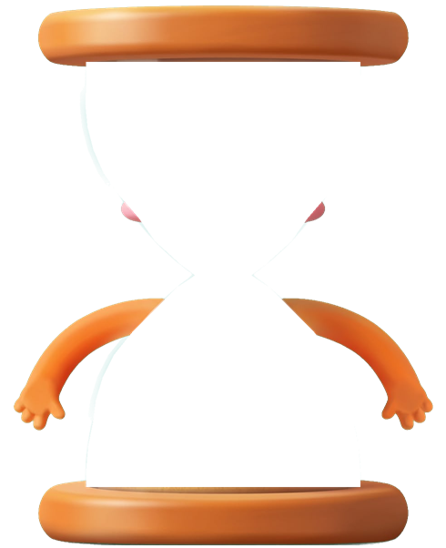
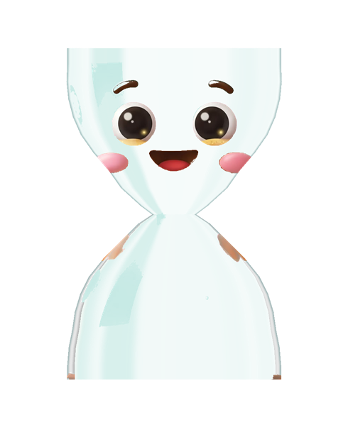
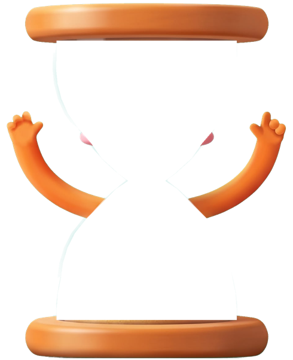
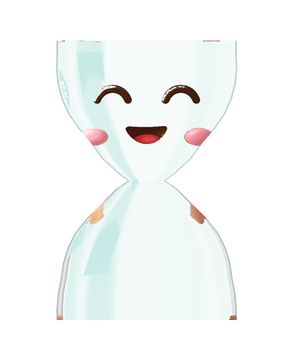

O slider do questionário vai de 2 a 15 dias; em Definições › Avançado continua até 30. Três perguntas, todas com valores já escolhidos, para quem só quer carregar em Continuar. "Saltar" fica com os valores de hoje. Tudo se muda depois em Definições › Avançado. Quem já usa a app vê o ecrã da direita uma vez e só responde ao ritmo e aos avisos: os espaços que já tem não mudam.
Entrada


Bem-vindo à ToDo
A lista que se limpa sozinha. Três perguntas para a ajustar ao teu ritmo.
1 de 3 · Ritmo
Quanto tempo fica um ponto sem ações?
Se não lhe tocares nesse tempo, sai da lista e fica em Expirados.
Um ponto criado hoje sai na quinta, 12 nov.
Mexer-lhe recomeça a contagem.
Muda-se em Definições › Avançado.
2 de 3 · Avisos
Quando queres o aviso?
Um aviso antes de um ponto sair, para o manteres ou concluíres.
À hora exata. De madrugada passa para a manhã.
Na véspera de o ponto sair.
Na véspera, depois do dia acabar.
3 de 3 · Uso
Para que vais usar a ToDo?
Escolhe as que quiseres: criamos os teus primeiros espaços.
Pessoal fica sempre. Vais começar com Trabalho, Estudos e Pessoal.
Pronto


Está pronto
Bom trabalho. O teu ritmo e os avisos ficam em Definições, para mudares quando quiseres.
Opcional. Guarda o teu perfil para outros aparelhos.
Quem já usa a app (uma vez)
Ajusta a ToDo ao teu ritmo
Duas perguntas: quanto tempo fica um ponto e quando queres o aviso. Começa com o que tens agora.
Definições, no topo de Avançado
Definições
O teu ritmo
Escolhido na primeira abertura. Os outros prazos (Manter, Expirados, Concluídos) estão logo abaixo.